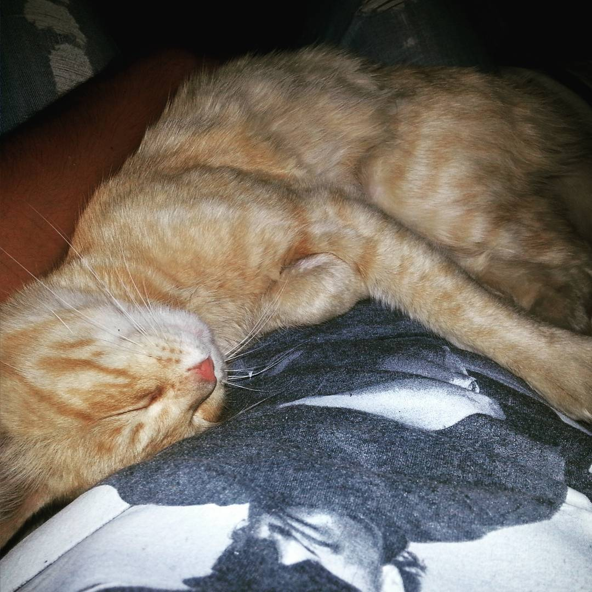
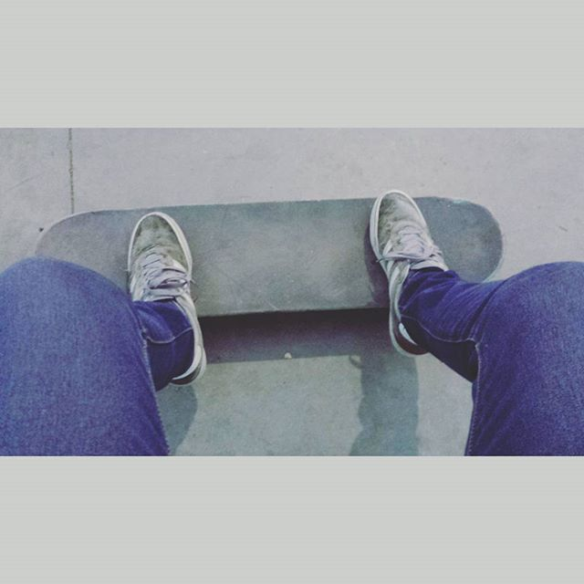
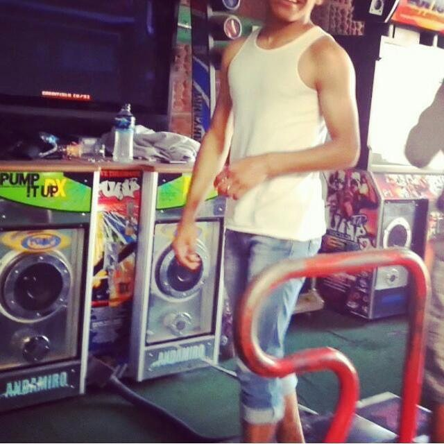

Mascota
Este es mi gato “Cheto”, cabe mencionar que yo no lo nombre así. Tiene 4 años de edad humanos aproximadamente de los cuales todos han sido conmigo. Cheto es muy tranquilo, solo come y duerme en lugares donde no debe. Cada que alguien come algo se acerca a pedirte comida poniendo sus patas en tu pierna. Es casi inmortal puesto que ha tenido varios accidentes y de todos se recupera.

Hobbie
Unos de mis pasatiempos favoritos es patinar. Comence a patinar a mediados de mi segundo en año en la secundaria. Sin duda
es algo que siempre me ha motivado ya que es algo en lo que aplica el decir que el percevera alcanza.
Otro de mis pasatiempos favoritos es jugar en el tapete Pump It Up. Comence a bailar en el tapete desde que curse mi
primer año en CCH Oriente. Fue una de las mejores etapas de mi vida. Ser constante en este juego es muy importante.
Se vuelve tan importante que se llega a convertirse en un estido de vida para alguno.


Info. Extra
Creciendo poco a poco, me quede sin tiempo para patinar o salir a bailar al tapete. Me encuentro estudiendo en la Univerdad y me ocupo de otras cosas mas importantes. Apenas me puedo ocupar de la escuela y de salir los fines de semana con mi novia. Pero en cuanto tengo un poco de tiempo para mi solo es un gran dilema el decidir que cosa haré primero.